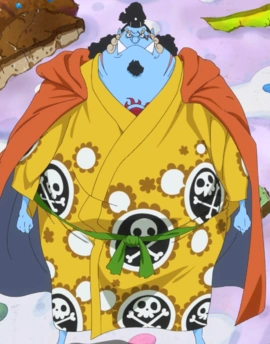

Quem é Jinbe
Jinbe, mais conhecido como “Cavaleiro do Mar”, é um homem-peixe tubarão-baleia e um grande mestre do Karatê Homem-Peixe. Seu objetivo final é realizar o desejo final do Capitão Fisher Tiger: que humanos e homens-peixe vivam em paz e igualdade. Ele era um membro dos Piratas do Sol. Depois que Tiger, seu primeiro capitão, faleceu, ele ascendeu ao cargo de segundo capitão.
Atualmente, Jinbe é o timoneiro dos Piratas do Chapéu de Palha e Oficial Sênior da Grande Frota do Chapéu de Palha. Antes do timeskip, ele era um dos Sete Senhores da Guerra do Mar e também um ex-capitão dos Piratas do Sol. Ele se aliou a Luffy durante o arco Impel Down.
Jinbe fez amizade com Monkey D. Luffy antes e durante a guerra em Marineford, e dois anos depois, uniu forças com ele e sua tripulação para impedir que os Novos Piratas Homens-Peixe derrubassem a Família Real Neptune do Reino Ryugu. Jinbei recusou o convite de Luffy para se juntar aos Piratas do Chapéu de Palha depois disso, até que ele cortou seu relacionamento com os Piratas da Big Mom durante o Arco Ilha Whole Cake. Ele voltou oficialmente aos Piratas do Chapéu de Palha durante o arco do País de Wano.
Como é a aparencia dele?

Jinbe é um grande homem-peixe tubarão-baleia azul e atualmente o membro mais alto dos Piratas do Chapéu de Palha. Ele tem uma constituição robusta semelhante à de um lutador de sumô e um rosto comumente associado a vários demônios japoneses, como um oni. Suas sobrancelhas e costeletas amarelas têm formas distintas como as encontradas em tais demônios, além de um nariz em forma de bulbo e um lábio inferior angular apontando para cima. Ele tem uma cicatriz em forma de raio que pode ser vista de sua costeleta esquerda e alcançando seu olho esquerdo, que ele obteve em algum momento entre o assassinato de Otohime e o encontro de Ace. Ele também possui duas presas inferiores cônicas semelhantes a presas associadas a Oni; o resto de seus dentes das fileiras superiores e inferiores são praticamente os mesmos, embora muito menores. Ele também tem uma sobremordida severa, o que abre espaço para suas enormes presas.
Ele tem cabelos longos, em dois tons, preto, com duas longas faixas brancas que vem das raízes sobre a testa e à direita nas costas, um topete, e um tufo de cabelo no queixo preto. Esse topete não existia durante seu tempo como um membro dos Piratas do Sol, em vez de seus cabelos curtos e pretos fluindo em trilhas a meio um caminho com uma cor luminada concentrada na parte de trás de sua cabeça. Ele manteve seu queixo bem barbeado antes de se juntar aos Piratas do Sol, após que esse cresceu gradualmente ao longo do tempo. Suas mãos e pés também são palmadas, típico de um homem-peixe, e seus membros, que são um pouco finos em comparação ao seu cinturão enorme. Suas brânquias (que são pálidas e de coloração rósea) estão entre os ombros e o pescoço.
Sob seu casaco vermelho claro (que ele troca por preto dois anos depois), ele parece estar vestindo uma roupas tradicionais japonesas Coral colorida que cobre tudo com padrões em forma de quadrado preto e branco com as camadas preto e branco alternando entre si (começando com o contorno preto da borda) e terminando com um quadrado escuro no meio de cada um deles. Ele também amarra seu traje com um obi roxo como uma fita em volta de sua cintura.
Jinbe é frequentemente visto vestindo diferentes quimonos tradicionais de padrões variados: ele usava um karakusa e mais tarde um desenho floral durante seu tempo como membro dos Piratas do Sol; ele usava desenhos quadrados durante sua estreia e um simples depois da Batalha de Marineford. Quatro anos atrás, quando lutava contra Ace, ele usava um kimono preto com desenhos de peixes em cada lado do peito e uma faixa vermelha com um tanto amarrado a ele. Dois anos após a guerra, enquanto esperava por Luffy na Floresta do Mar, seu quimono tinha padrões de folhas. Durante a história de capa de Caribou de O Kehihihihi de Caribou no Novo Mundo, ele é visto com outra estampa de flores. Para calçados, ele parece usar geta simples em seus pés palmados. Sua tatuagem de Piratas do Sol está no meio do peito. Durante o Arco Ilha Whole Cake, seu quimono é amarelo e tem um design Jolly Roger arranjado como listras. Além disso, ele também está vestindo um casaco cor de laranja. No Arco País de Wano, seu quimono é laranja com grandes diamantes estampados nele, e sua capa tem um desenho ondulado, colorido de um azul escuro que se torna progressivamente mais claro e finalmente branco nas pontas das mangas e na parte inferior.
Personalidade dele
Jinbe é um homem-peixe de grande orgulho e honra. Ele é conhecido pelo Governo Mundial como um pirata que odeia piratas, possivelmente devido à ação dos piratas na Ilha dos Homens-Peixe, o sequestro de homens-peixes e homens-peixe para vendê-los como escravos. No entanto, ele tem admiração por Barba Branca e sua equipe como ele os vê como uma história completamente diferente. Pelo que Barba Branca fez pela sua terra natal, Ilha dos Homens-Peixe, ele entende os danos de uma guerra entre o Governo Mundial e Barba Branca poderiam ser feitos. Ele sabe que lugares como sua casa, que são protegidas por simplesmente ser parte do território de Barba Branca, sofreriam se Barba Branca perdesse a guerra. Além disso, apesar de odiar piratas, ele tornou-se um, a fim de ajudar seus amigos e Fisher Tiger.
Apesar de seu orgulho, Jinbe aparece para colocar suas prioridades e princípios sobre sua honra, e não é acima de uma retirada de uma batalha de outra forma inacabada (apesar de ser envergonhado ou ridicularizado abertamente por um adversário) se era por causa de um bem maior. Ele também não parece hesitar de incentivar os outros a fazerem o mesmo por uma causa similar, como visto quando ele tentou e conseguiu convencer Luffy a dar prioridade à segurança de Ace em primeiro lugar sobre vingar a perda de seu irmão contra Barba Negra. Jinbe também tem apresentado grande humildade e respeito de sua força pessoal e seu status, sendo o traço mais original entre os Shichibukai. Isso foi feito por sua aparente disposição de até mesmo perder o seu estatuto Shichibukai por sua recusa a lutar contra os Piratas do Barba Branca.
Além disso, ao contrário de seu ex-companheiro de equipe, Arlong, o fato de que ele está disposto a ajudar um humano (Barba Branca) e sua equipe, bem como com os outros o separa de outros homens-peixe. Jinbe prova ser capaz de, pelo menos, respeitar alguns seres humanos e também reconhecer quando ele tem uma dívida. Ele é empático e compreensivo com as dores dos outros, como ser levado às lágrimas quando Luffy perdeu seu irmão na sua frente. Jinbe também chorou quando perdeu Ace e Tiger.
Sua personalidade no passado, dramaticamente contrasta com o temperamento aparentemente inofensivo no presente. Em um flashback mostrando uma batalha entre os Piratas do Sol e alguns marinheiros, Jinbe foi mostrado por exibir brutalidade excessiva pelos inimigos que até Arlong pediu-lhe para parar. Ele parece ser uma pessoa de bom senso e parece ser bastante passivo, às vezes. Embora ele não concordasse com o pensamento de Arlong que os seres humanos nunca devem coexistir com homens-peixe, ele notou que eles sempre pareciam ter medo deles. Depois de pedir a uma ex-escrava humana chamada Koala porque isso acontecia, ele disse que era porque não sabia muito sobre eles. Jinbe afirmou que o desconhecido era assustador e lembrava Otohime falando sobre como os homens-peixe não sabiam nada sobre seres humanos.
Originalmente, era duvidoso se Jinbe seguia as ideias de Otohime, pensando que eles não significavam nada. Ele mesmo declarou abertamente que ele não se importava com sua petição. No entanto, depois de ouvir o discurso sobre a paz de Fisher Tiger, Jinbe cresceu apoiando Otohime e até admitiu sobre o problema dos Piratas do Sol, o que teve como caso Jinbe se juntando aos Shichibukais para apoiar o ideal de Otohime.
Jinbe compartilha a mesma perspectiva que Vivi e suas responsabilidades. Quando Luffy pediu a Jinbe para se juntar aos Chapéus de Palha, Jinbe recusou dizendo que ainda há coisas que ele tem de fazer. A decisão de Jinbe também se assemelha a de Vivi, quando ele também pediu a Luffy para deixá-lo participar de sua equipe, se eles se encontrassem novamente no futuro.
Todas as recompensas do Jimbe
- 1,000,000,000 Berries
- $38,000,000 Berries
- 250,000,000 Berries
- 76,000,000 Berries
Primeira recompensa
Sua primeira recompensa era de $76.000.000, depois de seu recrutamento para os Piratas Sun.
Segunda recompensa
Já sua Segunda Recompensa aumentou para $250.000.000 por razões desconhecidas, sendo mais prováveis seus atos contra o Governo Mundial como o segundo líder dos Piratas Sun.
Terceira recompensa
Sua recompensa aumentou para um valor sem motivos conhecido para $438.000.000 depois de deixar o Shichibukai.
Quarta recompensa
É a atual recompensa e conseguiu ajudando em onigashima na batalha e ajudar a libertar Wano,por outro motivos tambm que por Luffy ser um imperador e ele ser os do 4 mais forte do bando,ai ele conseguiu a recompensa $1.100.000.000
Habilidades do Jimbe
Afirma-se que Jinbe foi capaz de batalhar contra Portgas D. Ace em condições de igualdade, mesmo quando Ace tinha poderes de Logia. Os dois quase se mataram nessa luta, pouco antes de Ace ser levado por Barba Branca, e em Impel Down, ele e Ace dividirem uma cela no Level 6. Ele foi capaz de facilmente socar Gecko Moria (um Shichibukai) a poucos metros de distância, quase nocauteando-o.
Jinbe tem uma tolerância enorme para a dor: não só ele foi uma das poucas pessoas por ser capaz de tomar uma "batizada" de água fervente em Impel Down sem sofrer dor(que é considerado um feito impressionante), e até mesmo suportar um soco de magma direto perfurador de Akainu com as próprias mãos. Apesar de ser queimado, e levar um golpe direto de Akainu, que perfurou seu corpo completamente, e sua única reação foi pedir desculpas a Luffy por permitir-lhe ficar ainda mais ferido. Curiosamente, ele exclamou de dor quando foi mordido por Luffy, embora esse é provavelmente devido ao fato de que ele estava se recuperando do ataque de Akainu, e foi pego de surpresa pela mordida de Luffy.
Jinbe também tem um dom para discernir estratégias militares depois de testemunhar qualquer mudança sutil em formações inimigas, como visto quando ele rapidamente adivinhou que quem despachou os navios de guerra para fora de Impel Down foi Magellan na tentativa de fugir durante a fuga em massa, e durante a batalha em Marineford onde supõe que os marinheiros estavam tramando alguma coisa depois de Ivankov informar que o inimigo está recuando ainda mais até a praça. Ele também tem algumas propensões para a estratégia de como ele divulga uma maneira de contrabandear Luffy e sua tripulação em Gyoncorde Plaza enquanto convencia Hordy a acreditar que ele e a princesa foram capturados.
Jinbe é um mestre do Karatê Homem-Peixe, revelado que ele já tinha uma faixa preta quando ele ainda era uma criança, que ele pode usar para bater fora os guardas de uma só vez. Sua habilidade é tal que seus ataques não precisam nem mesmo fazer contato físico com o inimigo como as partículas de água no ar vão levá-los longe depois de alguns segundos de tempo desde o início do ataque. Outro exemplo de sua força incrível e sua competência no uso do Gyojin Karatê é que ele derrotou Minorhinoceros, um dos quatro Guardas Demônio, com um só soco.
Ele também mostra a capacidade de manipular a água como se fosse um pano tangível através do Gyojin Karatê, mesmo usando-o para atacar à distância. Ele pode causar danos devastadores com esse tipo de técnica, tanto para as pessoas quanto para objetos (navios). Jinbe mais tarde revela que o Karatê Homem-Peixe lhe permite controlar toda a água dentro de suas proximidades, incluindo a água no corpo de uma pessoa. Jinbe demonstra essa habilidade espirrando água do mar nos zumbis de Moria, apesar de ele estar de pé sobre um campo de batalha coberto de gelo. E com essa habilidade, ele é capaz de prejudicar Luffy, apesar de ele ser de borracha.
Graças ao seu domínio sobre o Karatê Homem-Peixe, Jinbe pode realizar movimentos de bloqueio que são capazes de parar os ataques tão poderosos como os impulsos de uma sombra reforçada por Gecko Moria, um membro dos Shichibukai. Ele ainda foi capaz de parar o soco de Wadatsumi, que é um gigante e tinha também tomado Asteroides de Energia com um único chute e até msmo quebrar um de seus dedos. Nota-se que alguns momentos atrás, Wadatsumi tinha derrotado Surume, Kraken enorme bem conhecido por suas habilidades. Momentos antes disso ele foi capaz de desviar do tiro de água do super-alimentado Hordy Jones com relativa facilidade, mesmo com Jinbe comentando que o domínio próprio do estilo de luta de Hody empalidece em comparação com a dele. Jinbe também é capaz de usar a técnica secreta do Gyojin Karatê, Buraikan. Com essa explosão, Jinbe ataca o corpo do oponente com água. Depois que Jinbe usou esse ataque poderoso, ele enviou Wadatsumi ao ar.